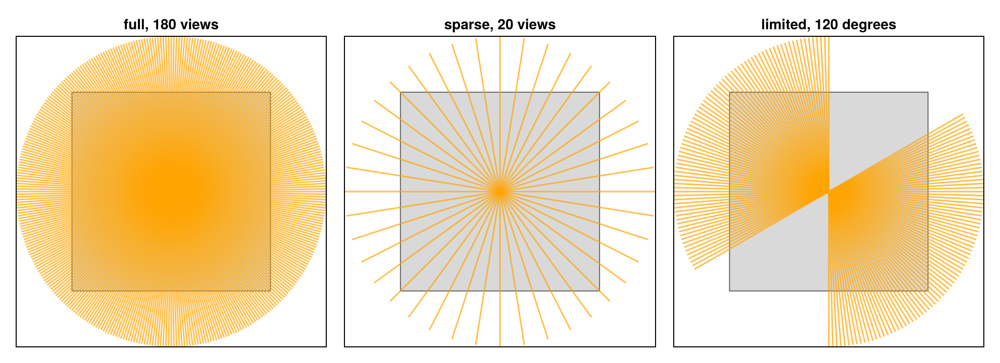
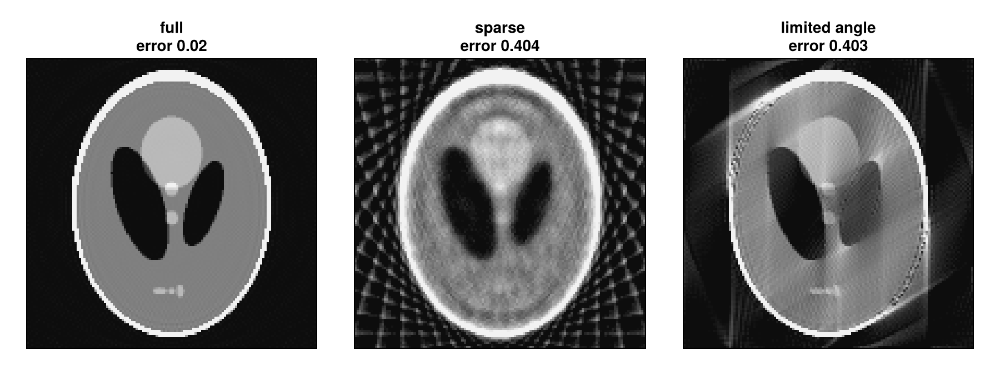
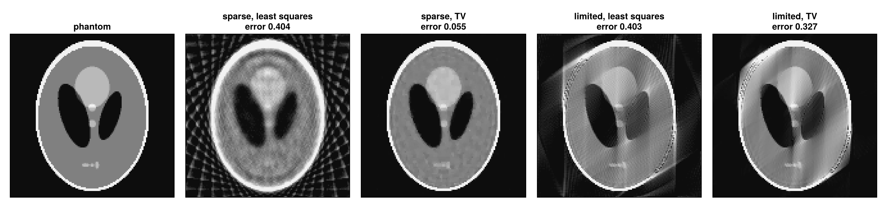

Sparse views and limited angles
Fewer views mean less dose and faster scans, and some scanners cannot turn all the way round. This tutorial takes views away from the 2D parallel-beam scan of Parallel beam in 2D in two ways, few views over the full half turn and many views over a limited arc, and shows what a regularised reconstruction can recover: much in the first case, little in the second.
using CTOperators, ImagePhantoms, RegularizedLeastSquares, CairoMakie
using ImageGeoms: axisdepth_figure (generic function with 1 method)The Shepp-Logan phantom on 128 × 128 pixels of 1 mm:
n = 128
image = ImageGeom(; dims=(n, n), deltas=(1.0, 1.0))
x_true = Float32.(phantom(axis(image, 1), axis(image, 2), shepp_logan(SheppLoganToft(); fovs=(n, n)), 2));Three scans
Parallel beam with a detector row of 256 cells of 0.5 mm:
- full: 180 views over half a turn, one per degree;
- sparse: 20 views over half a turn, one every 9 degrees;
- limited angle: 81 views over 120 degrees, a gap of 60 degrees.
scan(angles) = parallel_beam(; angles, nu=2n, nv=1, du=0.5)
full = scan(range(0, pi, 181)[1:180])
sparse = scan(range(0, pi, 21)[1:20])
limited = scan(range(0, 2pi / 3, 81));The directions of the rays of all views:

Least squares
CGNR, 30 iterations, for each scan:
function least_squares(geometry)
op = JosephProjector(image, geometry)
reshape(solve!(createLinearSolver(CGNR, op; iterations=30), vec(op * x_true)), n, n)
end
x_full, x_sparse, x_limited = least_squares(full), least_squares(sparse), least_squares(limited);
With few views the data no longer determines the image: many images match it, and the least-squares solution shows streaks along the measured directions. Over a limited angle, edges perpendicular to the missing directions are lost: the image is smeared along the directions that were never measured.
Total variation
Prior knowledge picks one of the images that match the data. The phantom is piecewise constant, an image with little total variation (TV), the summed magnitude of its gradient. FISTA minimises ½ ‖A x − y‖² + λ TV(x) with x ≥ 0. It needs a step size below the inverse of the largest eigenvalue of AᵀA, which power iterations estimate:
function total_variation(geometry; lambda=0.1f0, iterations=100)
op = JosephProjector(image, geometry)
L = RegularizedLeastSquares.power_iterations(adjoint(op) * op, zeros(Float32, n * n))
reg = [TVRegularization(lambda; shape=(n, n)), PositiveRegularization()]
solver = createLinearSolver(FISTA, op; reg, rho=0.95f0 / L, iterations)
reshape(solve!(solver, vec(op * x_true)), n, n)
end
x_sparse_tv, x_limited_tv = total_variation(sparse), total_variation(limited);
With 20 views TV removes the streaks and recovers the phantom almost exactly: the data and the prior together determine it. Over the limited angle TV sharpens the measured edges but cannot restore those the scan never saw. Missing directions are a harder loss than missing views.
The phantom suits TV unusually well: real anatomy has texture and smooth transitions, and the weight λ trades noise and streaks against loss of detail.
This page was generated using Literate.jl.